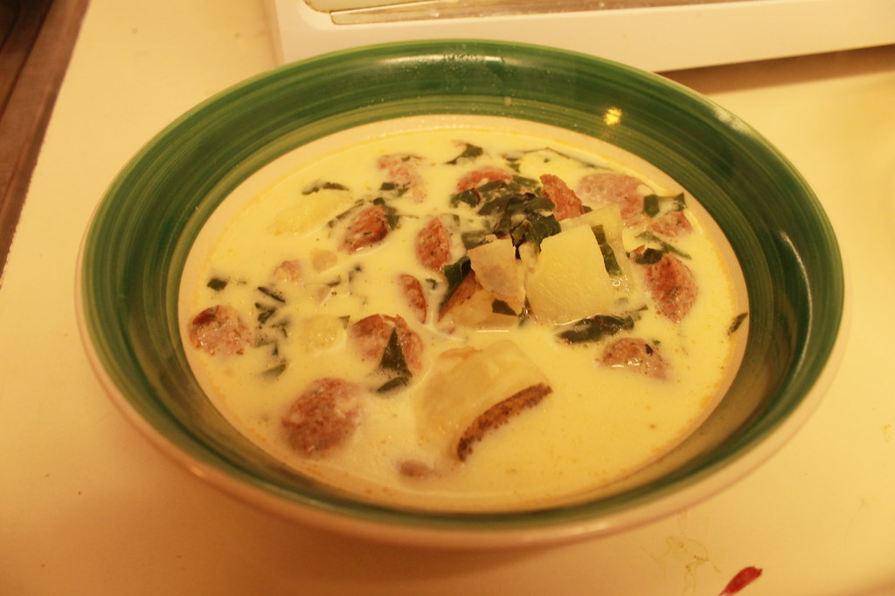

Zuppa Toscana
Back to the Recipes page.

Description
Zuppa Toscana is a creamy, Tuscan style soup with sausage, potatos, beans, and lots of vegetables, usually served with bread.
It's a very feel good homey meal that always hits the spot.
Ingredients
- 1 pound mild ground sausage
- 4 cups chopped kale
- 2 cups heavy cream
- 1 teaspoon black pepper
- 3 teaspoons salt
- 4-5 yellow potatoes
- 2 cups water
- 6 cups chicken broth
- 1 tablespoon minced garlic
- Half white onion diced
- 4 tablespoons butter
- grated parmesan for topping